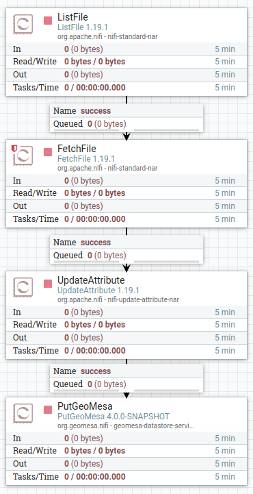

GeoMesa NiFi Quick Start¶
This tutorial provides an example implementation for using GeoMesa with NiFi. This walk-through will guide you in setting up the components required for ingesting GDELT files into GeoMesa.
Prerequisites¶
This tutorial uses Docker, and assumes a Linux OS.
About this Tutorial¶
This quick start operates by reading CSV files from the local filesystem, and writing them to GeoMesa Parquet files using the PutGeoMesa processor.
Download the GeoMesa NiFi NARs¶
First, we will download the appropriate NARs. Full instructions are available under Installation, but the relevant sections are reproduced here. For this tutorial, we will be using three NARs:
geomesa-datastore-services-nargeomesa-datastore-services-api-nargeomesa-fs-nar
This tutorial will use the GeoMesa FileSystem data store to avoid external dependencies, but any other back-end
store can be used instead by changing the DataStoreService used.
First, set the version to use:
export TAG="4.0.1"
export VERSION="2.12-${TAG}" # note: 2.12 is the Scala build version
mkdir -p ~/gm-nifi-quickstart/extensions
cd ~/gm-nifi-quickstart
export NARS="geomesa-fs-nar geomesa-datastore-services-api-nar geomesa-datastore-services-nar"
for nar in $NARS; do wget -O "extensions/$nar_$VERSION.nar" "https://github.com/geomesa/geomesa-nifi/releases/download/geomesa-nifi-$TAG/$nar_$VERSION.nar"; done
Obtain GDELT data¶
The GDELT Event database provides a comprehensive time- and location-indexed archive of events reported in broadcast, print, and web news media worldwide from 1979 to today. GeoMesa ships with the ability to parse GDELT data, so it’s a good data format for this tutorial. For more details, see Global Database of Events, Language, and Tone (GDELT).
Run the following commands to download a recent GDELT file:
cd ~/gm-nifi-quickstart
mkdir gdelt
export GDELT_URL="$(wget -O - 'http://data.gdeltproject.org/gdeltv2/masterfilelist.txt' | head -n 1 | awk '{ print $3 }')"
wget "$GDELT_URL" -O "gdelt/$(basename $GDELT_URL)"
unzip -d gdelt gdelt/*.zip
rm gdelt/*.zip
Run NiFi with Docker¶
Next, we will run NiFi through Docker, mounting in our NARs and a directory for writing out data:
cd ~/gm-nifi-quickstart
mkdir fs
docker run --rm \
-p 8443:8443
-e SINGLE_USER_CREDENTIALS_USERNAME=nifi \
-e SINGLE_USER_CREDENTIALS_PASSWORD=nifipassword \
-v "$(pwd)/extensions:/opt/nifi/nifi-current/extensions:ro" \
-v "$(pwd)/fs:/fs:rw" \
-v "$(pwd)/gdelt:/gdelt:ro" \
apache/nifi:1.19.1
Once NiFi has finished starting up, it will be available at https://localhost:8443/nifi. You will likely have to
click through a certificate warning due to the default self-signed cert being used. Once in the NiFi UI, you can log
in with the credentials we specified in the run command; i.e. nifi/nifipassword.
Create the NiFi Flow¶
If you are not familiar with NiFi, follow the Getting Started guide to familiarize yourself. The rest of this tutorial assumes a basic understanding of NiFi.
Add the ingest processor by dragging a new processor to your flow, and selecting PutGeoMesa. Select the
processor and click the ‘configure’ button to configure it. On the properties tab, select DataStoreService
and click on “Create new service”. There should be only one option, the FileSystemDataStoreService, so
click the “Create” button. Next, click the small arrow next to the FileSystemDataStoreService entry, and
select “Yes” when prompted to save changes. This should bring you to the Controller Services screen. Click
the small gear next to the FileSystemDataStoreService to configure it. On the properties tab, enter the
following configuration:
fs.path-/fsfs.encoding-parquet
Click “Apply”, and the service should show as “validating”. Click the “refresh” button in the bottom left of the
screen, and the service should show as “disabled”. Click the small lightning bolt next to the configure gear, and
the click the “Enable” button to enable it. Once enabled, close the dialog, then close the controller services
page by clicking the X in the top right. This should bring you back to the main flow.
Now we will add two more processors to read our GDELT data. First, add a ListFile processor, and configure
the Input Directory to be /gdelt (the location of our mounted GDELT data). Next, add a FetchFile
processor, and connect the output of ListFile to it.
Now we will create a process to set the attributes GeoMesa needs to ingest the data. Add an UpdateAttribute
processor, and use the + button on the properties tab to add four dynamic properties:
geomesa.converter-gdelt2geomesa.sft.name-gdeltgeomesa.sft.spec-gdelt2geomesa.sft.user-data-geomesa.fs.scheme={"name":"daily","options":{"dtg-attribute":"dtg"}}
The first three properties define the format of the input data. The last property is used by the GeoMesa File System data store to partition the data on disk. See Partition Schemes for more information.
Next, connect the output of the FetchFile processor to the UpdateAttribute processor, and the output
of the UpdateAttribute processor to the PutGeoMesa processor. Auto-terminate any other relationships
that are still undefined (in a production system, we’d want to handle failures instead of ignoring them).
Now our flow is complete. It should look like the following:
Ingest the Data¶
We can start the flow by clicking on the background to de-select any processors, then clicking the “Play” button on the left side of the NiFi UI. You should see the data pass through the NiFi flow and be ingested.
Visualize the Data¶
Once the data has been ingested, you can use GeoServer to visualize it on a map. Follow the instructions in the File System data store quick-start tutorial, Visualize Data (optional).
Note that due to Docker file permissions, you may need to run something like the following to make the data accessible:
cd ~/gm-nifi-quickstart
docker run --rm \
-v "$(pwd)/fs:/fs:rw" \
--entrypoint bash \
apache/nifi:1.19.1 \
-c "chmod -R 777 /fs"